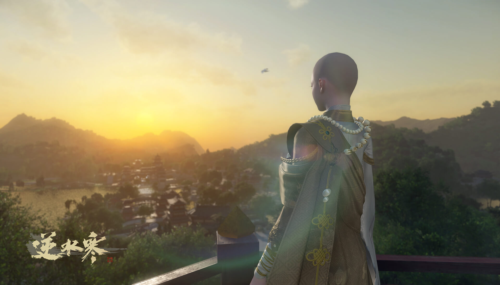

对话选择“我要出家”，接取出家任务，考验玩家的心性、悟性。完成考验即可成为净慈寺中的一位僧人/尼姑，自己从给予的字里选择一个法号。 出家后，玩家不能与其他玩家结婚或结情缘。 出家之后，玩家原先的姻缘面板会被替换成出家面板，记录日常任务、佛门位阶和佛性值等。
出家·斩断尘缘
玩家出家后可以接到大量的佛门日常任务，这些人物大多都与佛法有关，例如暮鼓晨钟、清修礼佛、抄写佛经、化缘布施等。 会通过任务让玩家学习到许多经典的佛教历史典故，也能让玩家对人生与禅理有所感悟。 完成佛门任务可以提高自身的
日常任务·敲钟
积累佛性值到一定程度后，可以接取入世任务。 入世任务需要玩家在净慈寺中完成一段经文诵写，然后找一位异性未出家的玩家共同完成“历情劫”，看破红尘之后即可完成任务。 完成任务后可晋升高阶弟子,，可以离开寺庙，并且只有在寺内才必须穿着袈裟，在寺外可以随意穿着。
出家·尘世历练
玩家出家后，会向其所有好友发送消息“您的好友XXX决定斩断尘缘，远离俗世“。 选择出家的玩家一个小时内可以选择反悔还俗，解除僧人身份，并将佛性值清零，寺庙也会收回发放给玩家的时装袈裟和出家称号。 若出家时间大于一小时后希望还俗，则需要由自己或好友向寺庙缴纳一笔十万铜钱的香火费才可以赎身还俗。 
出家·尘缘难断
结婚招募
寻找有缘人
红尘情深
看遍红尘
千丝姻缘
十方云海
牵绊江湖
江湖同行